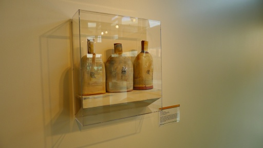
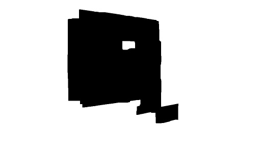

| Original Image | Front Layer | Rear Layer | Beta Mask |
| 1 or 2 Depths | 1 or 2 layers | Plane (or Plane-pair) Labeling |
| Front Layer Depth Map | Rear Layer Depth Map |
|  Original Image |
 Beta Mask |
|
Front Layer |
Rear Layer |
|
Two Layer Rendering |
|
Single Layer Rendering |